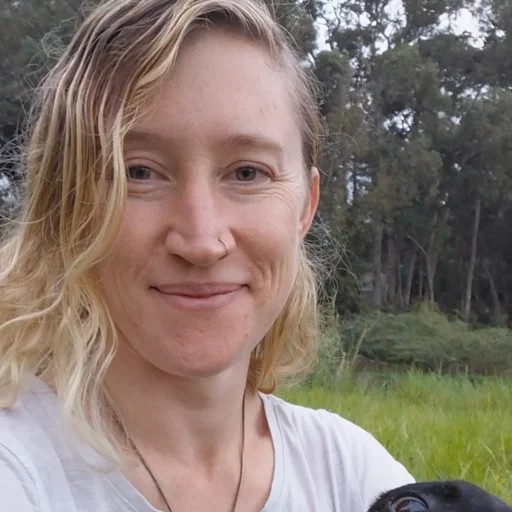

Bryony Leach
Bryony notices details and keeps track of objects — handy on a build. She brings filmset construction experience and first aid, helped set up the BEAT and HUMANITY warm-ups, and has been a fire performer at the last several Earthdances.